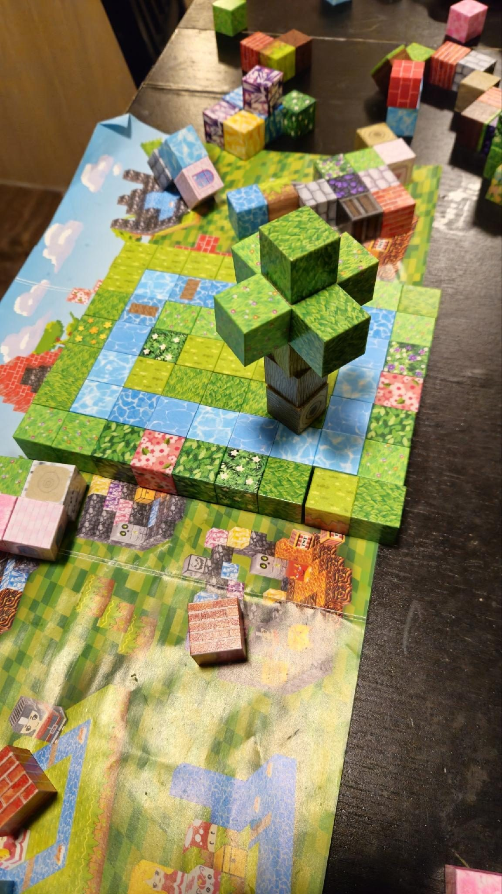
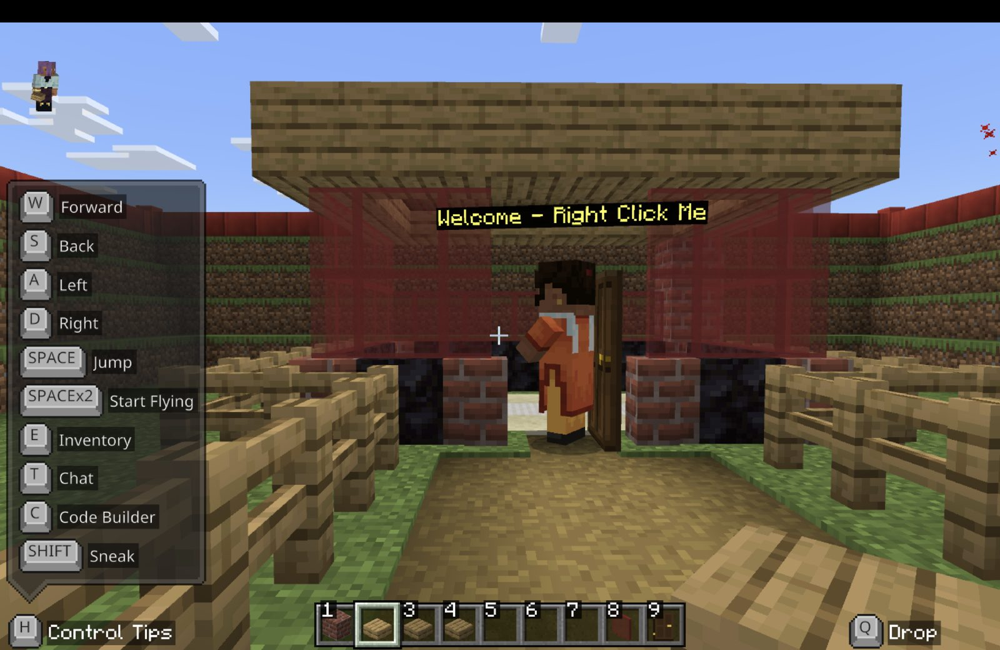
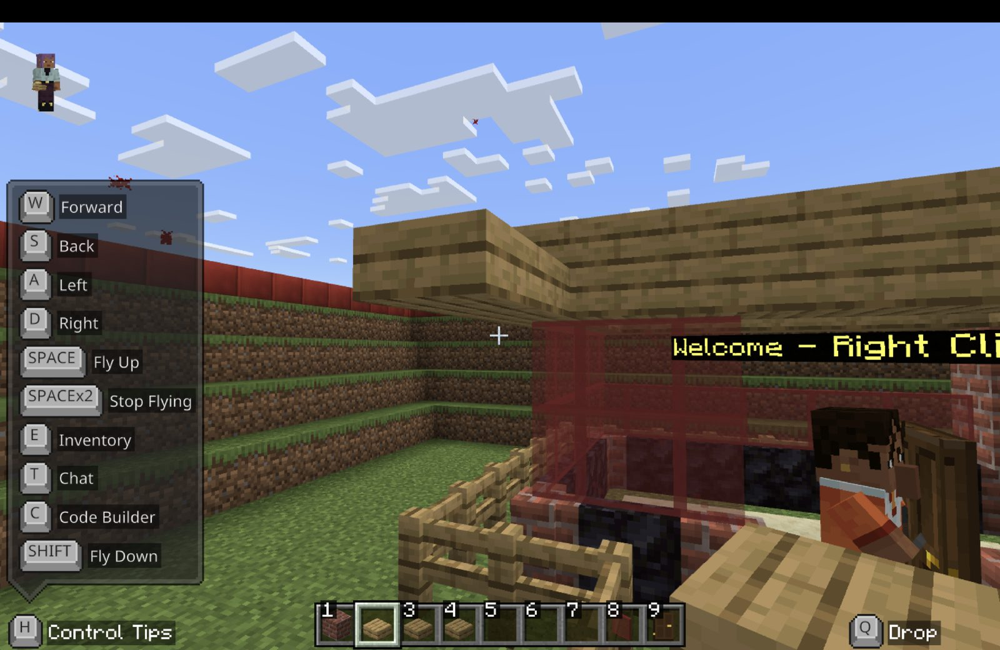
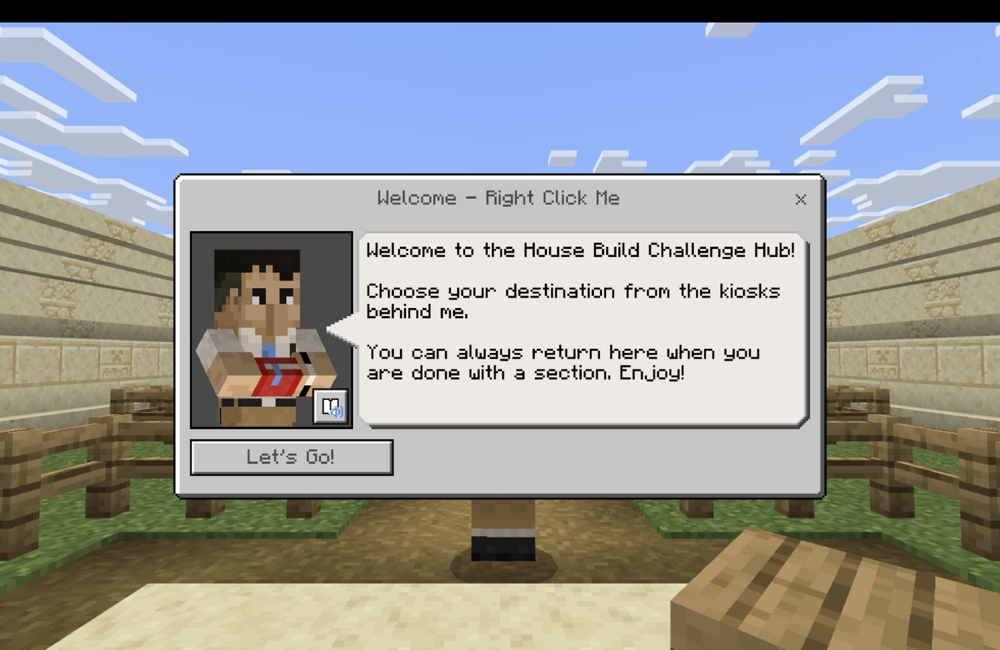
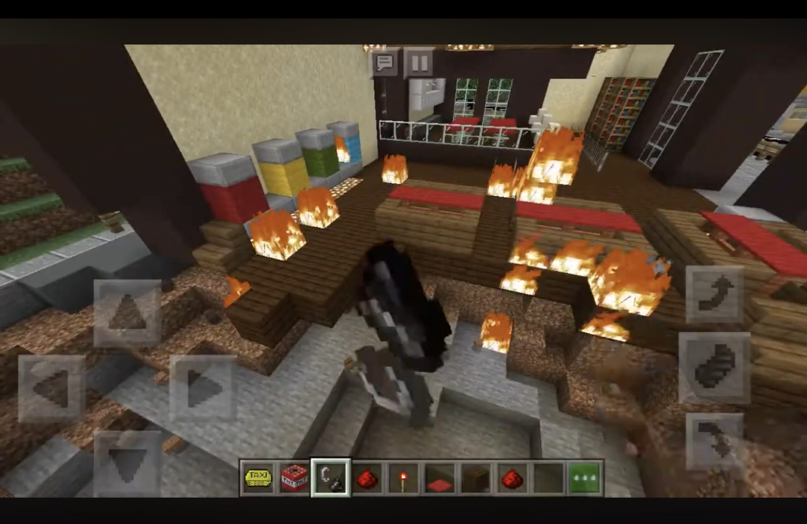
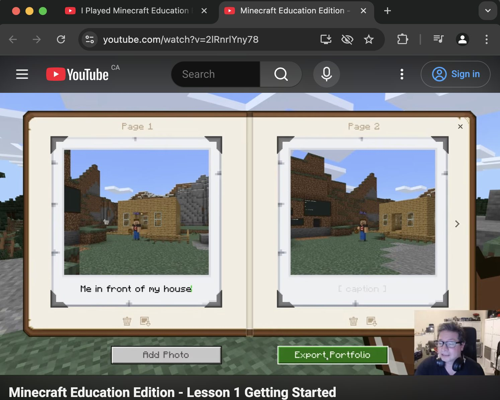

Gee, E., & Gee, J. P. (2017). Games as distributed teaching and learning systems. Teachers College Record, 119(11). https://doi.org/10.1177/016146811711901202
Jenson, J., & Burrell-Kim, D. (2023). Digital games and literacies. In R. J. Tierney, F. Rizvi, & K. Ercikan (Eds.), International Encyclopedia of Education (4th ed., pp. 583–589). Elsevier. https://doi.org/10.1016/B978-0-12-818630-5.07025-1
A central idea in Gee and Gee's (2017) theoretical framework is that learning happens through embodied experience, particularly through social interaction as well as interaction with the world, and that both virtual and offline experiences can contribute to this process.
Gee and Gee introduce what they call affinity spaces, self-organizing systems organized primarily around common interests, endeavors, goals, or practices, in which novices and experts can teach and learn from one another and where the organization of the space is "as important as the organization of the people" (p. 13).
These affinity spaces are central components of larger distributed teaching and learning (DTAL) systems, in which people, technologies, tools, media, and different forms of participation become networked and can, "under the right conditions," produce higher-order collective intelligence.
Gee and Gee's comparison of video games with both offline experience and static media is particularly interesting because games externalize a capacity humans already possess through mental simulation and role-playing: players can form hypotheses, act, receive a response from the game world, and then modify their understanding and subsequent actions.
However, their distinction between games that can "talk back" and books that cannot may be less absolute once each medium is situated within a DTAL system, since readers can mentally construct a dialogue with a text and then reinterpret it through conversations with other people even though the text itself does not change in response.
If both books and video games can exist within rich DTAL systems, what unique learning value do Gee and Gee attribute to a video game's ability to "talk back" and allow the learner to modify subsequent actions, compared with a reader's ability to rethink and reinterpret a static text through mental simulation and social interaction?
Jenson and Burrell-Kim (2023) argue that digital games expand and transform what counts as literacy, moving beyond traditional school-based skills such as reading and writing to include understanding game systems, procedures, multimodal forms, social interaction, and texts and media surrounding games.
They describe forms of literacy that are particularly associated with games, including procedural literacy, in which players learn to interpret how rules, systems, and coded processes communicate meaning, while also engaging in more familiar literacy practices such as reading, communication, collaboration, and narrative interpretation.
In their conclusion, Jenson and Burrell-Kim argue that "digital games modify and change the constructs that, in other domains, have been recognized as literacies" and should therefore be approached not simply as entertainment or educational tools, but as a culturally significant creative medium that can be critically interpreted much like literature or poetry.
This broader framing is significant because it shifts the value of games away from merely asking whether they improve conventional academic skills and toward recognizing games as cultural and expressive forms whose mechanics, constraints, and possibilities for action can themselves communicate meaning.
The discussion of games such as Dys4ia and A Light in the Darkness makes this particularly clear, since frustration, impossibility, or the removal of player choice do not simply support learning but function as expressive devices that allow players to experience (embody) ideas such as constraint, powerlessness, and social barriers through the game's procedures.
If procedural literacy involves interpreting how rules, systems, constraints, and possibilities for action communicate meaning, to what extent is it actually unique to digital games, and could nondigital games such as chess, Dungeons & Dragons, or self-created games afford similar forms of procedural literacy?
Both Gee and Gee (2017) and Jenson and Burrell-Kim (2023) move beyond a narrow view of games as isolated entertainment or as tools for practicing traditional academic skills, instead emphasizing embodied interaction, social participation, and forms of learning and meaning-making that extend across digital and offline contexts.
However, Gee and Gee are primarily concerned with how learning is distributed across networks of people, tools, spaces, and experiences in DTAL systems, whereas Jenson and Burrell-Kim place greater emphasis on games themselves as cultural and expressive media whose rules, procedures, and multimodal forms can constitute distinctive literacies and communicate meaning in ways comparable to literature or art.
Elena Kolmogorov · EDUC 490M
Games are designed to be played, but many are not designed to be played by beginners – implicitly requiring both a dexterity and knowledge of interface/command conventions. Taken together with technological prerequisites (computers, tablets, consoles, phones), these qualities can make games challenging object for analysis. This gives rise to a practical question, to what extent do you need to play a game in order to productively analyze it?
Numerous scholars have described gameplay as an ongoing loop:
1) the machine renders information,
2) the player interprets that information and acts upon it,
3) the machine reacts to the player... and the cycle continues.
In that second movement, the player judges her surroundings and, based on her prior experience, selects one of many finite actions -- taken together, these finite actions create more complicated strategies (enacting plans and whims alike). As a researcher, there is great value in directly participating with the game in this manner, as it allows you try, fail, succeed, and experiment -- discovering the options you have in a given situation (e.g. killing the guards; sneaking around them; or abandoning the mission, going home, and playing with your dog).
What are the limits of observation without play? If I (silently) observe a game, it often limits what I can discover: I can see what another player did, the strategies they employed and so forth, but this doesn’t allow me to explore the other possibilities the game might offer. To the contrary, observation without play could leave me with the impression that a situation had a single solution, or that the game must be played a certain way. (Of course, if I could sit in a room with the player, ask them to try certain approaches, or ask them why they’re doing something, then I’d be able to extend that experience of observation by experimenting, trying, failing, playing the game---albeit through another’s hands.)
If play a game casually, I usually settle on a strategy that works; although I arrive at this strategy through direct experimentation, I do not have with any final or complete understanding of the game. In a complex game, there will always be decisions I don’t make and strategies I don’t employ. Consequently, I can’t base my analysis of the game solely on my own, subjective, experience of casually playing that game, but need to extend that experience by purposefully exploring the game, formulating critical questions that guide my play in order to answer specific questions about what the game is like and how it is designed to shape the way players engage with it.
Your tasks are:
1) Identify your expectations and assumptions prior to play (no word limit):
2) play the game alone (if possible), learn its mechanics, and immerse yourself in its world (no word limit):
3) watch a stranger play (online is easiest) and see how she handles it all (no word limit);
4) Bring it all together through a 1000-word research synthesis/ analysis.
Above all, be honest about the research you conducted and proportionate with the claims that you make.
Read before playing!
Use this online tool to record your experiences with the game you’ve chosen. This is an exercise in guided, reflective play: it is different from the kind of gaming you might do in your free time and has more in common with how you might study a novel or movie for other classes. The online form is structured to help you organize and reflect upon your experiences, making it easier for you curate and analyze these experiences later.
In the field notes you begin: i) highlighting key commonalities and differences between what you’ve noted throughout your play session/s; ii) honing in on certain details about the game (a scene, a mechanic, a character) that you want to focus on in your research synthesis; and iii) identifying specific concepts and readings from our course syllabus (or outside it) that will help support your analysis (where possible).
The end result of this exercise is a set of fieldnotes (with images) from each of the three sessions, and a summative synthesis of your analytical observations from all three sessions drawn together into a critical analysis of the game. The goal of this assignment is not a review of the game, or a statement about what you liked or did not like about it: it is an empirically-driven, theoretically-grounded analysis of the game based solidly on evidence documented in your fieldnotes, including, but not limited to, how that game represents gender, sexuality, race, ethnicity, class, and/or violence, how it connects to course readings and if and where possible, what “learning” the game depends on and/or develops.
Each of these questions aims to get at a general notion, “what expectations (about this game) am I coming in with?” The goal in this reflection is not to test the accuracy of your predictions; rather, the goal is to identify and reflect upon the assumptions and biases you, as an observer, are bringing into the experience, as catalyzed by the games’ promotional material, introductory screen, any other descriptive or suggestive information.
Answer the Questions
With this in mind, respond to each of the following questions:
What will I like / dislike about it?
What will I find interesting about it/boring or tedious about it?
What will I need to do in it?
What will I need to learn within it?
What will it be like / similar to (other games I have played)?
I am drawn to Minecraft because my kids play a physical version of it: we have magnetic Minecraft blocks that they build with at home (see Image 1). I have also seen the game in MrBeast videos on YouTube, so I have seen some ways of playing it. In one, players built things that resembled real objects. Another was a team survival game, where the goal was to see which team had the most people left at the end; it was a fun, psychological game to watch. My kids learned about Minecraft through their peers, and although we have never played the digital game together, they are interested in it, so I think this might be a game I can play with them. All I really know is that Minecraft has building blocks and some characters, and that it can be played in many different ways. I decided to try Minecraft Education rather than the regular version, because I want to become a teacher, and this is the version I will most likely use.
I think I will like the process of building and setting my own goals. I also expect the game to have no violence and none of the silly scenarios I dislike; I expect it to be free and peaceful to play. I hope it will include some puzzle-solving or other "brain work," which I enjoy. Because I am playing the Education version, I also hope to learn something new about the world, perhaps something scientific.
I expect to find it interesting to see how I can develop a skill. Having read about digital literacies and games, I hope to build that kind of literacy, and perhaps something else that will be applicable in life as well. As for what might be boring or tedious, I have seen in a video that players start by laying one brick at a time. If I have to do that, and cannot speed up repetitive tasks, I think it will be boring and tedious.
If this were regular Minecraft, I think I would need to set a goal for myself. Building with Lego blocks was one of my favourite activities as a child, so I am good at setting myself a goal and enjoying the process of building. With no other instructions, left to my own resources, I would try to build a living environment, perhaps a house or a castle with several floors and different ways to explore the physical space. If the Education version gives me a different task, a game within the game, I will follow the clues and try to reach a solution.
I will need to learn how to create elements, how to put them together, and whether different elements react differently with each other. In other words, I will need to learn the rules of the game and how to play.
From what I have seen so far, I think Minecraft will be similar to the Lego building I did as a child: setting my own goal, playing the way I like, and enjoying making things my own way. It may also resemble the few other games I have played. Some of them involved growing food, and in Civilization I needed to cultivate things. I think Minecraft will be similar in that I will start from zero and slowly progress until I am able to build more things, more easily or better. I have heard in conversations that players can even build factories in Minecraft eventually. So I expect the gameplay to be about starting from nothing and building my skills, and my capacity within the game, until I can produce something more meaningful.
At the end of your fieldnotes for session one, craft one or two sentences (no more) that, for you, summarize your expectations prior to playing, and what these expectations are based on. Include one image that catalyzed and/or supported your expectations.
I expect Minecraft Education to be a peaceful, Lego-like building game in which I set my own goals, start from nothing, and gradually build up my skills and capacity, with some puzzle-solving and science learning along the way. These expectations come mainly from my kids' magnetic Minecraft blocks, MrBeast YouTube videos, my childhood Lego play, and my experience with Civilization.
Image 1

Image 1. My kids' magnetic Minecraft blocks at home.
Play the game on your own: familiarize yourself with the controls, mechanics and interface; get an initial understanding of the game’s narrative and its aesthetic. Your goal is to “get a feel” for what it is asking from you, in terms of: inputs, emotion, and attention.
Note: If you use outside help at any point, make a note of that. The effort here is not to do anything “correctly”, but to diligently record whatever you do as you try to get a ‘handle’ on the game.
Version and setup: Minecraft Education, MacBook Air with trackpad only, UBC Microsoft account. I played just over an hour and a half across three worlds: a Washington DC lesson world, a free play world, and the House Build Challenge tutorial. For descriptive notes, I recorded myself thinking aloud while playing.
Just write as you play -- write anything descriptive, records of objectives, hints, fragments of ideas, anything. You may elect to write as you play (i.e. pausing the game) or right after you have completed a play session. Try to get at least 60 minutes of play time.
Think-aloud while playing — part 1: starting the game and choosing a world
So the first thing I did have to log in, I am opening settings. There's a how to play, run around, gathering resources. Preparing for the night, interesting because you first craft and creeds [create]. I'm not gonna read through all of this because I want to try to discover. Mining, nightfall, surviving the first night, nightfall, built in a shelter. It's time to get ready when the sun starts to set. At night, the overworld is home to zombies. How fun. Okay, getting settled. Education, world builder education. Permission logs. Minecraft education features several special blocks that make it easier for teachers to create and employ lessons. Only players with world builder ability can place and destroy these blocks. Cool, okay. Code builder allows players to explore, create, and play in Minecraft by writing code using familiar learn-to-code platforms. Launch code builder by pressing C or by using the command code. Okay. New and featured. Coding pack. RVI. Chess. Good game. Village square. Interesting. I live in Italy. I'm curious what is good game by Minecraft education, and what do I do if I just play? My world's library. Okay, what if I go to a library? Starter worlds, how to play, build challenges, science, computer science, okay, mathematics, art and design, language, social study, interesting, career education, sports, science or social studies. Let's do social studies. Social emotional, history, geography, economics, civics, also. I didn't go to geography. I'm curious. Okay, so city of Florence, Kiev, Mesopotamia. Live in Italy. Renewal Energy, Rome. Washington DC. I want to play in Washington DC just for fun. Explore 17 points of interest inside the capital. Then game quiz. The buildings are mostly faithful reproductions. Learning objectives. Learn 17 points of interest. Do fun activities inside the capital. Take an in-game quiz. Okay, cool. So how do I start? Tags. Share link. Create. Okay. Create. Download in your world. This could take a minute.
Think-aloud — part 2: the Washington DC world
So it loaded and then says live pod. Oh, wait. Live pod, free play mode, play however you want. Story mode, build a car that runs on trash. Oh, this is fun. Okay, so I see the controls that, like, I look wherever I do point on my trackpad. So, okay, let's click. No, didn't work. So how do I, oh. Come on, how do I select this? Okay, S and W seem to do something, but not the arrow keys. A and D also seem to do something. This is what I've learned from before, but how do I... I'm trying to click and... Oh, maybe this. No. So, I'm already stuck. The first thing is to try to choose something, and I'm not able to. Okay. I'm looking out of the window, and I can see things being built, which is actually a cool visual. Oh, okay, I clicked on something and... Oh, okay, now I choose. Hint, you're an inventor of cars. Your car is under the capital. Welcome to Washington, have fun. Gather all of something. I needed to gather something. Okay, mine. How do I mine things? Okay, hint, the guidebook from the chest will help you play. The taxi item can quick travel you to the quiz room, the Washington. Okay. Okay, so taxi. How do I mind [mine]? Oh, mine. New destination, the Vietnam Memorial. The map and the compass can help you find it. Okay, I did something, and where's map and compass? I'll help you find it. Okay, so I'm selecting... I'm trying to mine things. Views. Mine. Okay. Okay, so control tips. I open that space jump. Oh, cool. Inventory, chat, code builder. Okay. Ooh, what if I need to code builder? Ooh. Okay, no, I cannot do this yet. Not there. Inventory, E. Inventory, okay. Okay, so this is what I've seen before. Construction, okay. Cool, and crafting, construction, taxi. Oh, okay. This looks like the stuff that my kids have. Okay, so I cannot choose anything or crafting, okay. Level and so what do I do now? I'll put a single log anywhere on the crafting feed and several planks will appear in the output slot. Simply drag your shiny planks to your hotbar and replace them into the world. Oh, cool. Okay. So this is how to... Let's see, I have taxi. No, not that. Okay, so I need... where's wood? Wood. Oak planks. Cool. No? How do I drag them? But how do I place them on the green? Pumpkin pie equipment. This is so weird. Taxi goes on... Back on here, it's... Okay. Craftable recipes. Maybe I don't have anything. Maybe that's why. Oh, I need to like buy things or crafting. Oh, it says crafting. What do I need to craft? But I don't have anything, so I cannot craft. White carpet. Okay, so crafting. I need this. I don't have this. Okay, cool. So I don't have anything. Okay, the map and compass. Where are the map and compass? Oh, so there. Okay, now I know how to walk. Take the compass. Okay, how do I take the compass? Okay, how do I take the compass? Oh, compass. Okay, cool. I have a lot of compasses to choose from. Inventory, chest. Okay, I'll have many compasses, just in case. Take the compass, okay, and map. How do I go to map? Okay, so how do I... Shift sneak, okay. Probably should have played the usual game first. What is this? I see a bright box on the top. I'm not sure what to do there. Okay, so the instruction said... Okay. Ford's Theater, the map and the compass can help you find it. Darn it. Well, even if I find it, how do I get there? Take the trash collector. Let's take the trash collector. Nothing happens. Mine. Oh, open. Okay. Trash collector. Let's take the trash collector. I don't know why. But let's take it because I can take it. Okay. Crafting. Huh. Ooh. What if I do taxi and compass? What's gonna happen? Nothing. Oh.
Think-aloud — part 3: the free play world
Okay, so I left that world where I was not able to do anything, and I started a free play session. So now I got some materials to start building, and I'm just creating a playing field where I can build a house or something. Why is there? Ooh. Ooh. Oh, yeah, I've seen this. So I can like, oh, this is fun. Okay, so I am currently, oh, and how do I get out? But I don't know. Okay, so I created like an underground thing, which is fun actually. So let's build around it. Okay, can I do this? Stick, cool. I don't know what I'm doing. Okay, so I have a stick now. Okay. Oops. Oh, I tried hitting the sheep just to see what happens because I have a stick. And the sheep said meow. It was like red, so I think it will kill it if I. Oh, what? So I'm trying to, like mine or destroy things. I don't know. Q drop. Oh, what am I doing? Okay, where am I? Can I go get the sticks again? What happened? Yeah, so I'm trying to destroy a tree, and then it was like just hanging. Oh, okay, so I'm still able to hit the tree if I'm jumping. I don't know what I'm doing. I'm mining. Okay, so this is me mining. Mine sign appears, so I'm trying to mine. And I'm jumping, and I'm destroying the tree. Weird, but okay. It's a floating set of leaves, and I'm mining those, but it's still up in the sky. I want to clear it because it's weird. Okay, how do I start flying? Ooh, I can fly. Wait. Oops. Wait, what happened? Did I just make it into a meal or something? Hit. I don't want to hit. I want to... Oh, okay. So that was a live square thingy. It says hit. I don't want to hit. I don't want to hit anyone. Stop flying. Okay, I stopped flying. What happens to the thingy? Looks like a pig. I cannot mine it, but what do I do? What do I do next? What do I... Oh, there's a whole world out here. Okay, I think this is where I built... This is where I built my... No? No, this is just a hole. Because I had like a little hole that I dug up, which was fun. Woohoo! This is not a plain field, it's a ooh. Okay. Sure. So how do I build? How do I tab now? Jump space inventory. E. Can I do jungle stairs? Maybe recipe? No, recipe book. What do I do? How do I? Ooh, nature. No. Items. Equipment. Construct. Oh, construction. Planks. Block of emerald sounds fun. But what do I, how do I build with it? Ladder. They have ladder. No, I don't want ladder. Doors. Items. Fashion table. Crafting table. Snack table, okay. Nature. Cross block. Leaves. Lily pad, okay, so I can do something with it. I've seen people do unlimited, okay. But how do I build? What is happening? All items, crafting. Nothing happens, eh? How do I build? Place. Oh, place. Oh, okay, so I'm placing doors. Fun. Now, change inventory. Let's do emerald. Okay, place. Oh, no. Oops, what did I do? Okay, how do I choose the stuff that I'm building? Oh, come on. Okay.
[Outside help: I Googled how to select building blocks in the hotbar.]
After playing — what happened next in free play
Yeah, so after the building tip, I built a small kind of house. I tried to, and that felt somewhat satisfying, but not much. It was not nearly as beautiful or as sophisticated as I would have liked it to be, and it was much more difficult using those game controls that I have now. I'm using just a trackpad, so it's like very difficult to control this, and also I have to be just for an angle [at just the right angle] to the thing, so I have to like fly over or move, it looks like, in the game every time I want to place a new block. So this is kind of frustrating and just creates a barrier for me. Also, what I did and did not describe is I actually tried hating [hitting] things. You remember the first reaction that I accidentally hit something alive? I didn't feel good. But then, kind of out of desperation from this game, I started hitting monsters at first. So I tried to see if I can destroy a zombie or a moving plant thingy, which I think probably worked. Repeatedly hitting that thing, and then I decided to see what happens if I accidentally at first I hit a person, like an NPC, and then I try to do it again and see what happens, and then nothing happened. And then I was thinking, like, for the pig, if I hit it multiple times, will it turn into meat with bacon or something, just to see if it, like, what would happen as a kind of research at this point. And nothing really happened, but just the ability of like hitting things. I don't know if I'm happy with this, having no consequences with this. It's kind of a weird game in a sense.
The House Build Challenge tutorial
Okay, I tried playing something else - a tutorial. And I tried building a house, and that was a much better experience. First of all, I couldn't hit the NPC. Just did nothing if I did a single click. I could only get information from them, which is great. Also, there was an area for house building, and there was a specific task to do. Yeah, so it was a much better experience. I actually got the physics of the game a little bit better, I think. So, I learned a little bit about how the game is played.
I figured out that you have to click on the specific site where you want it placed, and if you have to look at it as well, so you have to move your character out of the way. I did not figure out how to craft things, and I don't know if I completed the game because I think I did build a house with those specific requirements, but nothing happened when I finished.
After playing, consider your experience more holistically -- What problems did it present me with? What options did it give me (to address those problems)? When and how does the game invoke gender, class, race, violence in ways that might be problematic? What about learning? Does anything stand out as a ‘defining’ or ‘unique’ feature of the game?
The main problem Minecraft Education presented me with was its controls. I could not simply create: to place each block, I had to reposition my character until I was looking at exactly the right spot, and then select the right block from my hotbar. On a MacBook trackpad this made every move slow and tedious, and blocks often landed somewhere other than where I intended, so I settled for building something only roughly the shape I had in mind. The second problem was orientation. In the Washington DC lesson world, the game told me what to do (find my car under the Capitol, gather materials, follow the map and compass to the Vietnam Memorial) but not how to do it with the controls. After a minute or two of looking for clues without success, I gave up and left that world.
The game did offer help: a "How to Play" guide, tutorials, an on-screen panel listing the control keys, and some hints. I chose to skip the tutorials because I wanted to discover the game by playing, and that choice had a cost. The help that was available was either up-front instruction or a list of keys; there were no hints responding to what I was trying to do in the moment, which is what I would have preferred. My most useful option ended up coming from outside the game: I Googled how to select building blocks in the hotbar, and only then learned that the number keys select blocks. The option inside the game that finally worked for me was the House Build Challenge tutorial.
What changed my experience in the tutorial was not having a clear task, but having the whole environment built around one. There was a cleared plot for building, a single goal, no debris to deal with, outlines showing where blocks were meant to go, and a non-player character who could only give information and could not be hit. Because it was a tutorial, there were also no big expectations. In that space I finally understood the basic rule of building (you look at and click the exact spot where the block should go, moving your character out of the way if needed), and the controls became something to learn rather than a wall. Even so, nothing happened when I finished my house, so I could not tell whether I had succeeded. In Fullerton's terms, the tutorial gave me clear boundaries, a single objective and limited resources, but no clear outcome (Fullerton, 2024).
Violence was available everywhere in free play. I could hit sheep, pigs, monsters and villagers. I did it first by accident, which made me uncomfortable, and later on purpose, partly out of curiosity and partly out of frustration with the game. Hitting a villager or a pig produced no visible consequence. In the tutorial, by contrast, single-clicking an NPC did nothing. This contrast shows that whether violence is possible is a design decision. Jenson and Burrell-Kim describe how games communicate through procedures that are "required and prevented" and "rewarded or reprimanded" (Jenson and Burrell-Kim, 2023, p. 585); free play neither prevents nor reprimands hitting other beings, while the tutorial prevents it entirely.
Representation also caught my attention, although I want to be careful about how much I claim from one session. I read my own character as probably male. The villager I met in free play seemed to me to have a darker skin tone, perhaps Middle Eastern; his only function was trading, and he did not react when I hit him. Together, these design choices gave me the impression of someone lower-class and exchangeable, less than a full person, and because that impression was attached to a darker-skinned character, I worry about the stereotypes this kind of design could leave in players' minds, even if no one intended it. I only looked closely at one villager, so I cannot say whether this reflects the villager design as a whole. I also noticed my own assumptions: I did not initially register the guide character in orange in the tutorial (see Images 2a and 2b) as a woman, and if anything I thought of her as more male than female, until after I started looking at the screenshots I took to prepare this paragraph about gender and race. It seems I default to "male" when a character's gender is not obvious, which is something I bring to the game as much as something the game presents.
Minecraft Education is designed for learning, but I did not get far enough into its lesson worlds to learn their content. What I learned was mainly procedural: how to move, select and place blocks, and how the game's building rules work. At first I thought this was all I had learned. However, Jenson and Burrell-Kim describe procedural literacy as more than operating a system: it also means understanding what the code does "as a representation of culture" and reflecting critically on a game's "embedded ideologies" (2023, p. 585). My discomfort with consequence-free hitting and my questions about the villager are that second kind of literacy, so I learned more about how the game makes meaning than about the academic subjects it tries to teach. My learning was also spread beyond the game itself, across trial and error, and the outside environments that now acquired new meaning - i.e the videos I watch for fun like MrBeast gaming, and my kids’ magnetic blocks. This fits Gee and Gee's (2017) argument that learning with games happens across a wider system of tools, people and practices rather than inside the game alone.
The defining feature of Minecraft is building with blocks: placing, swapping and removing them to make whatever you can imagine. It is like an online version of Lego, but it works differently, because every block has to be placed through the controls rather than by hand. What stood out about Minecraft Education specifically was the breadth of its library, with lesson worlds in science, computer science, math, art, language, social studies and more. They sounded meaningful and exciting, but reaching them assumes a lot of existing skill. For a beginner like me, the game had a very high barrier to entry.
I was right that I would want to build, and that building one block at a time could be tedious. What I did not foresee was how unpredictable each block would feel, or that I would not be able to do anything at all in a lesson world. I also expected a peaceful game, and found one where hitting animals and people is always an option.
Playing and analyzing games are subjective activities -- as you played, you were likely: engaged, irritated, startled, sympathetic, angry, bored, etc. Identify the affective responses you had while playing, and do your best to account for the in-game circumstances that gave rise to them (i.e. where, when, intensity, etc.) Don’t worry about being exhaustive, just mention what you think matters.
My strongest feeling while playing was frustration, and almost all of it came from the controls. Using a trackpad, every block required precise aiming and repositioning, which put a barrier between what I wanted to build and what I could actually build.
Boredom arrived twice. The first time was in the Washington DC world, when I was stuck and could not find a clue within a minute or two, so I left. The second time was in free play: after a few minutes of satisfying novelty, such as accidentally digging an underground hole and discovering I could fly, the game became boring again because I was not good at building, and the setup did not seem made for creating beautiful buildings unless I first acquired the skill. Building my first small house was only somewhat satisfying, because it was nowhere near as beautiful or sophisticated as I had hoped.
The first time I accidentally hit a living animal, I felt uncomfortable. Later, partly out of desperation with the game, I started hitting monsters, a villager and a pig on purpose, as a kind of research into what would happen. Nothing did, and that left me uneasy. I am not sure I am comfortable with a game that lets players hit animals and people with no consequences.
The House Build Challenge brought relief. The relief came from having a single goal, a predictable environment, and everything set up for that goal. I was also glad the NPCs could not be hurt. The session ended in uncertainty, though, because nothing happened when I finished my house, so I did not know whether I had done it right.
Looking back, my feelings followed the design of each space. Open spaces left me frustrated, bored and uncertain, while the more restrictive tutorial let me feel calm enough to learn. Complex tasks felt unreachable, so I gave up, while focusing on a single task felt manageable and I gave the game another try.
At the end of your fieldnotes for session two, craft one or two sentences (no more) that, for you, summarize your experiences of learning this new game, and what specific elements/skills/etc., based on your experience of solo play, to be the most important in getting a ‘handle’ on the game. Include at least one image that demonstrates these crucial game elements/skills/characteristics.
Learning Minecraft Education had a pretty steep curve of learning. Without prior experience it was hard to play intuitively, and as someone who doesn't like watching tutorials first, I found that controlling and placing blocks was the key skill for getting a handle on the game. A small, single-skill challenge like the House Build tutorial was the best way in, and if I were helping someone else start, I would direct them there first before the bigger gameplay.
Image 2a

Image 2a. The house I built in the House Build Challenge, with the control tips and hotbar visible.
Image 2b

Image 2b. Choosing the direction/position where each block goes — what I learned in this tutorial.
Image 2c

Image 2c. The House Build Challenge Hub: a tutorial space for acquiring one skill.
Watch an online video of your game, either via live-streaming (Twitch.tv) or conventional video (YouTube). Get a sense of how an expert plays that game: see how they understand and react to the game and how that differs from YOUR playthrough; see what it is like to watch the game not just as a viewer, but as a mass media spectator. Again, organize your account into three kinds of notes.
Videos watched (YouTube, all Minecraft Education): three videos, each about 20-something minutes long.
Video 1: Washington DC world, Video 2: "Minecraft Education Edition - Lesson 1 Getting Started" Video 3: Minecraft Education lesson worlds (Spanish language learning, being a penguin, launching a rocket),
Document what the player is doing, paying attention to, ignoring, prioritizing, but also what they are talking about (i.e. what they verbally frame as important during the playthrough). Make notes of what the player is paying attention to, prioritizing, and/or ignoring and if and how that is different from your play.
Video 1: the Washington DC world
Okay, so I have just watched the first video that I'm watching. I'll probably watch two, just because I try different game modes/worlds. So the first I watched was that Washington DC exploration, and it seems like the video was made by a teenager, just a regular person. It wasn't well made particularly, but just someone pre-recording their video and then giving a brief explanation of what they're doing, and the rest is just kind of them playing the game. At first the player went to the White House and explored that, and then explored a house in the city. Then they just got bored and just started destroying houses with TNT (see Image 3a). It's weird how someone just, you know, starts destroying things out of boredom, has nothing better to do, and I guess it relates to how the game is designed. This is what is afforded, but there's nothing else that people can do in this game that would be meaningful enough for them to keep being entertained. For example, this person also didn't build a car out of trash (one of the game’s goals). That didn't happen, even though they were an experienced player. They went much further than I ever did. They actually did explore the city, and they did collect the trash. I just don't think they got to the point of building anything. So is that what kids are supposed to do in this game? Just destroying a city like this. Kind of the highlight of this gameplay, and emotional highlight as well, was when the person found a car and discovered that they can drive it. That looked fun. I got excited for a second, and the player got excited. That was interesting to watch, and I also wanted to try and do that. At the end of the video, the player found a few other vehicles and modes of transportation and tried them. So they tried a motorcycle, a plane, a helicopter as well. The game ended on a nice note, I guess. But that explosion stuff was out of place. I did not expect to see this in the gameplay of exploring Washington, DC. That seemed weird, and that seemed like the game affordances created that, which wasn't necessary, and it didn't leave me with a good feeling.
Video 2: a teacher in Creative mode
I watched my second video. It was the creative mode, which I tried second. And it actually is by a teacher, it looks like, because it's talking about things for teachers. And the gameplay is exactly what I wanted to do but wasn't able to. So this person was able to fly over the world, but I wasn't able to actually fly around and look at the world - I only flew high enough to build a roof on my house. This person actually found a nice open place to build a house, and they built a house. Well, exactly what I wanted to do. And so I've seen how they made that, and then they showed me how they dug a tunnel, which I also thought of doing initially when I realized that I can go underground, and I wanted to play with that, underground tunnels and such. And they showed me how to do it in that video. And there are some other tools that I saw in the video. They're pretty fun, like taking photos and writing your own storybook. It looked great.
Video 3: three lesson worlds
I have just watched the last video, and that was also someone playing Minecraft Education, but something that I haven't seen. They did three different games and kind of tried to just go through them. One of them was in Spanish language learning, one of them was about being a penguin and exploring that world, and another one was launching a rocket. And the person was basically just trying to get through the map and complete it without really doing much, or without exerting any effort and reading anything or learning too much.
Review your descriptive notes and consider the problems the player encountered and the strategies/ solutions that they enacted. Furthermore, consider how the player navigated/commented on issues/ structures of race, gender, class, and violence. What did you notice about the game when you watched, as opposed to when you played? Hold off on making any big conclusions for now.
Each of the three players I watched dealt with a different problem, and their solutions reveal different things about the game.
The first player, possibly a teenager in the Washington DC world that I had abandoned, had none of my trouble with the controls and went much further than I did. They explored the White House and the city, collected the trash, and discovered they could drive a car, a motorcycle, a plane and a helicopter. They never built the car out of trash that the story mode sets as its goal, however. Once exploring ran out, they began destroying houses with TNT and set buildings on fire. Their solution to having nothing meaningful (and easy enough) left to do was destruction, which mirrors my own turn to hitting animals out of frustration. The game afforded it, and nothing in this historical lesson world discouraged it.
The second player, a teacher demonstrating Creative mode, did not seem to face real problems at all. They flew over the world, chose a spot, built a house, dug a tunnel, and used Minecraft Education's camera and portfolio tools to make a photo storybook. This was exactly what I had wanted to do, and the video showed me how.
The third player went through three lesson worlds (Spanish language learning, exploring as a penguin, and launching a rocket) and tried to complete each map with as little effort as possible, without reading much or engaging with the lessons. Their strategy shows that completing a lesson world and learning from it are not the same thing, because the educational content could be routed around. To me, these worlds seemed to use the appeal of Minecraft to insert education, rather than building learning into the play. This is close to what Papert, quoted by Burke and Kafai, calls the "instructionist" wish for "games that will teach math or spelling or geography," as opposed to the constructionist vision of children making games themselves (Burke and Kafai, 2014, p. 689). My first reaction was that this kind of education could be done better outside Minecraft, where there are fewer restrictions. On the other hand, restrictions are part of what makes any game work: Suits defines playing a game as accepting rules that favour "less efficient means" (as quoted in Egenfeldt-Nielsen et al., 2020, pp. 46–47). The problem may be that these worlds have the wrong restrictions, because the rules that matter for completing the map are not the ones that require engaging with the lesson.
These issues came up directly only in the third video, and there they came up quite a lot. In the Spanish lesson, the player, a man judging by his voice, stopped at certain words to say that, as a white adult, he could not say the Spanish word for "black." In the rocket challenge, he acknowledged that one of the NPCs was a woman, and then added that the character might not be a woman. In both moments, the game's content prompted a player to reflect on race and gender, although only in passing and not because the game asked him to. Violence appeared in the first video, where the player destroyed buildings in a recreation of Washington DC; however, there were no characters present, so this could arguably be a non-violent act of vandalism.
Watching changed what I paid attention to. Without controls to manage or a task to complete, I tuned into my own thoughts and feelings, and I started thinking about how I would approach the game next time. Watching also showed me what the game can be once the controls stop being a barrier. The teacher flew over the world, built a house and dug a tunnel, which is exactly what I had attempted. In that sense, the videos taught me what I could not learn on my own, which supports Gee and Gee's (2017) view that learning around games is distributed across tools and people, including online videos. At the same time, watching skilled players confirmed that skill alone does not make the lesson worlds engaging: the first player abandoned the story goal for destruction, and the third skimmed through the content without thoughtfully engaging with it.
What affective responses did you observe the player having while playing? What evidence did you have of their affective response/s? What did they choose to focus on? How were they different from responses and focus/foci you had? Pay specific attention to instances where you were surprised by something the player said or did. And if possible, reflect on how affective responses impacted the ‘learning’ or ‘engagement’ you think can be recognized and documented from this observed play session.
The players' feelings showed mostly in their voices and in what they chose to do. The first player was clearly excited to discover they could drive a car, and I got excited with them; for a moment I wanted to try it myself, and the video ended on a nice note as they tried a motorcycle, a plane and a helicopter. When they turned to TNT and fire, however, I felt uneasy, while they didn’t seem to have any emotion at all. Watching someone destroy a city out of boredom, in a lesson world about American history, did not leave me with a good feeling, and it made me ask whether this is what children are meant to be doing here.
The second video was quite positive. The player was talking to their audience and talking though potential group gameplay - they seemed to think more about others’ experiences in the game and not their own, like a guide or a facilitator. This is different from my focus on my own gameplay and emotions. It was interesting to see a different viewpoint altogether.
The third player seemed disengaged, hurrying through the worlds without reading. They did have fun setting their own challenges of completing a world’s objective as quickly and with as low resources as possible, and they seemed to have more fun with that goal than with anything to do with Minecraft. Within their own self-imposed challenge, the player seemed delighted every time they managed to cheat or skip a task yet still progress in the game.
My own focus differed from that of all the players. The players focused more on the tasks they set up for themselves, while I was tuning into my feelings and thinking about the game's design. Probably because of this assignement and general learning in this course. Across the three videos, the players' emotions seemed tied to their own personal goal-setting: excitement came with discovery (driving, building), while boredom led either to self-imposing new goals, such as blowing up buildings or skipping lesson material, and neither of those led to visible learning. What surprised me most was how quickly all of the players got bored and started doing something else not within the game goals.
At the end of your fieldnotes for session three, craft one or two sentences (no more) that, for you, summarize your observations of a more skilled player playing this game. Include one image that supports your conclusions.
Watching three players in three different scenarios showed me that experienced players move through the controls with ease, yet the lesson worlds rarely held their attention. Boredom led to them creating their own set of goals, not related to (and maybe opposite of) academic learning. The game looked most meaningful, and taught me the most, in the teacher's open creative building, which showed me what I had wanted to do but couldn't on my own.
Image 3a

Image 3a. Video 1: Building in flames after being blown up with TNT by a player.
Image 3b

Image 3b. Video 2: In-game storybook made with Minecraft Education's camera and storybook tools.
The final "bridge" is to put all that together in an analytical and summative "case study" of the game that should be no more than 1000 words. Make sure you make careful and direct connections to the course readings where possible and relevant.
My expectations of Minecraft, which I have never played before, came from home: my kids build with magnetic Minecraft blocks, and I had seen Minecraft in MrBeast videos, so I expected a Lego-like building game. I suspected that Minecraft might not fit a strict definition of a game. Egenfeldt-Nielsen, Smith and Tosca place it at the free-play (paidia) end of Caillois's categories (2020, p. 41), and describe "process-oriented" games as something that "could fit the definition of a toy rather than of an actual game" (p. 59). So I planned to make it a game myself, with two goals: to build a house, and to learn how the game works, all within 60 minutes. Across over ninety minutes of solo play in three game modes, and three twenty-minute YouTube videos of other players, I found that whether Minecraft Education became a meaningful game, and a place to learn, depended on who supplied its goals and structure. In this case study, I would like to discuss whether what I played was a game, what watching others revealed about who sets the goals, and what this means for designing games for learning.
Fullerton (2024) defines a game as a closed, formal system that engages players in structured conflict and resolves its uncertainty in an unequal outcome. I hoped that the Minecraft Education version would supply a clear goal and meet Fullerton’s definition. For free play, I set my own goal: to build a house within an hour. This gave free play the missing outcome.
On a trackpad, controls were very difficult for me to master. Moreover, every building block and touch-to-select command demanded precise aiming and repositioning, and in the Washington DC lesson world I could not work out how to act at all. Chen, Su and Yuan (2024) found that an "experience gap" between students' expectations and an unfamiliar device reduced creativity in a game-making course. I felt it first-hand.
The barriers were so high that I gave up twice. In the Washington DC world, the game told me what to do but not how to do it with the controls, so after a few minutes I left. In free play, even after I figured out block selection and building, the result never quite matched what I imagined. Burke and Kafai (2014) argue that tools for young makers need “low floors”: they should be “intuitive enough to allow new users to acclimate to it gradually and with a degree of confidence” (p. 696). For me, the floor was so high that playing became frustrating and I was ready to give up.
I tried one last game mode before abandoning the game altogether: the House Build tutorial. The restrictive yet inviting environment allowed me to successfully complete my goals: building a house and finally understanding the basic controls. While I won by my self-set definition, I still do not know whether I met the game’s specifications, because nothing happened when I finished building the house.
Watching other players showed me something I could not see while playing: no matter which mode they chose, they ended up setting their own goals instead of following the designed game plan. Player 1 never built the car out of trash that the Washington DC story requires; instead, they blew up houses with TNT. Player 3 went through Spanish, penguin and rocket lesson worlds, finding ways to progress without reading or engaging with the lessons. Even Player 2, apparently a teacher, followed a personal project: a house, a tunnel and a photo portfolio. This reminds me of Zimmerman’s point that game design is a “second-order design problem” (as cited in Fullerton, 2024, ch. 1): designers create rules, but play emerges from them only indirectly. In Minecraft Education, the players, not the designers, often decided what the game was.
Suits (as cited in Egenfeldt-Nielsen et al., 2024, p. 46) describes a game as accepting rules that favour “less efficient means.” Restrictions are what make a game, but I believe they must restrict the right things. The House Build tutorial worked because it removed other goals and affordances: there was a cleared plot, a single objective, and non-player characters who could only give information and could not be hit. With everything else taken away, I could focus on one skill. The lesson worlds were also restricted environments, but they did not restrict what needed to be restricted. Players could skip the reading, rush to the end, or destroy the city, so the rules required to finish the map did not require engaging with the lesson. Jenson and Burrell-Kim (2023) describe games as expressing ideas through procedures that are “required and prevented” and “rewarded or reprimanded” (p. 585). In the lesson worlds, learning was neither required nor rewarded, while destruction was never prevented or reprimanded. This is close to Papert’s critique of “instructionist” games that aim to “teach math or spelling or geography” (as cited in Burke & Kafai, 2014, p. 689): adding content to a game does not make the game teach it.
My emotions followed the same pattern. Frustration came from the controls, and boredom came when the game’s goals were too hard, too complicated, or not interesting enough: twice I simply left. Excitement and satisfaction came from three sources: novelty (accidentally digging an underground room, discovering I could fly), mastery (finally understanding how blocks are placed), and completing my self-set goal of building a house. Watching produced similar feelings. I shared Player 1’s excitement at walking through the first buildings and discovering a car that can be driven, and Player 2’s finished house made me think, “oh, how nice, I could do that too.” I did not share in Player 1’s satisfaction of successfully blowing up buildings, nor in Player 3’s excitement when they beat the system or found a new way of cheating. However, I can understand and relate to those emotional states. I only wish that the game design would allow similar satisfying outcomes within the main gameplay.
All-in-all, Minecraft Education became a real game for me only when I supplied the goal and the outcome myself, and the other players did the same, sometimes in destructive ways. For learning, the lesson is not to remove restrictions but to restrict the right things, as the House Build tutorial did. As Egenfeldt-Nielsen et al. (2024) remind us, “defining anything is a highly political project” (p. 34), and calling Minecraft Education a learning game shapes how teachers will use it. Based on this research, which is limited to one beginner game session and three videos, I will choose other games, both for educational purposes and for spending time with my kids. And for educational purposes, I will choose (and maybe design) games with clearer structure and goals.
Burke, Q., & Kafai, Y. B. (2014). Decade of game making for learning: From tools to communities. In M. C. Angelides & H. Agius (Eds.), Handbook of digital games (pp. 689–709). Wiley.
Chen, C., Su, S., & Yuan, S. (2024). The effect of regular and innovative control devices on cultivating creativity in a game creating course in primary school. Education Sciences, 14(8), 833.
Egenfeldt-Nielsen, S., Smith, J. H., & Tosca, S. P. (2020). What is a game? In Understanding video games: The essential introduction (pp. 33–62). Routledge.
Fullerton, T. (2024). Game design workshop: A playcentric approach to creating innovative games (5th ed.). CRC Press.
Gee, E., & Gee, J. P. (2017). Games as distributed teaching and learning systems. Teachers College Record, 119(11).
Jenson, J., & Burrell-Kim, D. (2023). Digital games and literacies. In R. J. Tierney, F. Rizvi, & K. Ercikan (Eds.), International encyclopedia of education (4th ed., pp. 583–589). Elsevier.